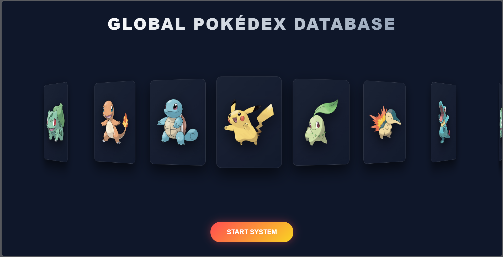
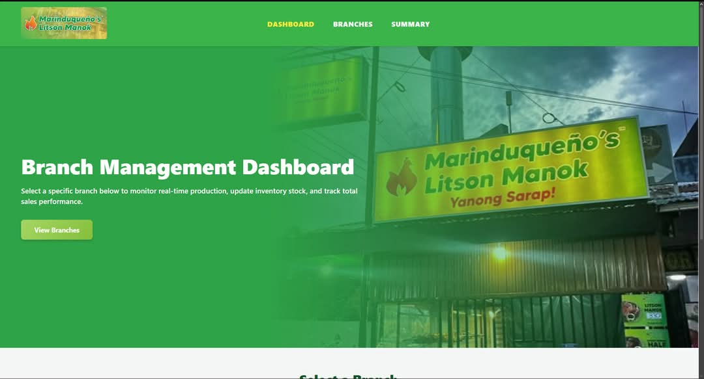
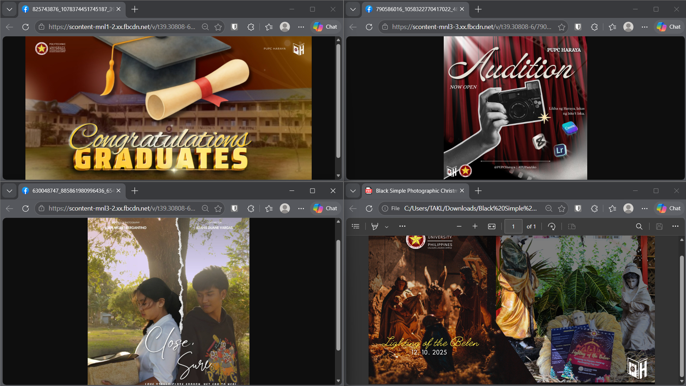

I’m Trish Larona, a BSIT student aspiring to be a Full‑Stack Developer. I have hands‑on experience with Java, Spring Boot, PostgreSQL, and RESTful APIs, alongside frontend skills in HTML, CSS, and JavaScript. My projects combine technical development with creative media design.

Full‑stack app with Spring Boot, PostgreSQL, and HTML/CSS/JS. RESTful endpoints and interactive UI.
View on GitHub
Analytics dashboard built with Flask, PostgreSQL, and Bootstrap. Includes charts for sales insights and branch management.
View on GitHub
Designed posters, layouts, and pubmats with Canva/Lightroom. Strengthened branding and communication as Treasurer.
View on FacebookI'm open to internship opportunities. Feel free to email me or connect on LinkedIn.